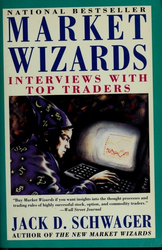

杰克·施瓦格（Jack D. Schwager）1948年出生，先后在布鲁克林学院（Brooklyn College）取得经济学学士学位、布朗大学（Brown University）取得经济学硕士学位。他从1970年代起进入华尔街，在多家机构负责期货研究。1989年，他把对交易员的长篇访谈编成《金融怪杰》（Market Wizards）。书中没有试图建立一套统一交易理论：每章保留受访者的市场、时间尺度和方法差异，施瓦格再在访谈后归纳风险控制、纪律和错误处理等共同点。这样的结构也意味着业绩数字多来自受访者或其机构，不能一概视作采用统一口径审计的排名。
全书第一部分聚焦期货与外汇交易员。迈克尔·马库斯（Michael Marcus）在Commodities Corporation管理的账户约十年间由3万美元增至8000万美元；这不是他整个职业生涯二十年的个人账户复利。布鲁斯·科夫纳（Bruce Kovner）讲述早年的一笔大豆交易：4000美元的仓位在六周内浮盈至4.5万美元，他却撤掉原有对冲，价格反转后只保住2.2万美元。他在采访中说，那之后自己"病了一个星期"，此事后来成为他严格控制风险的起点。理查德·丹尼斯（Richard Dennis）的访谈围绕他和威廉·埃克哈特（William Eckhardt）关于“交易能否教会”的赌局展开，由此产生"海龟交易员"实验。保罗·都铎·琼斯（Paul Tudor Jones）则回忆与彼得·波里什（Peter Borish）比较1987年和1929年走势图，并在当年10月股灾前建立空头；图形类比是决策线索之一，不应被简化成单凭两张图便准确预测崩盘。
第一部分里还有拉里·海特（Larry Hite）——他创立的明特投资管理公司（Mint Investment Management）以严格的量化风控著称，海特在访谈中反复强调"永远不要在单笔交易上冒超过账户总资金百分之一的风险"，并把这条纪律视为自己能在市场里存活下来的根本原因，而不是他判断趋势的准确率有多高。第二部分转向股票交易员：《投资者商业日报》（Investor's Business Daily）创办人威廉·欧奈尔（William O'Neil）阐述了他的CANSLIM选股法；三次夺得美国投资锦标赛冠军的大卫·瑞安（David Ryan）是欧奈尔的门生；马蒂·施瓦茨（Marty Schwartz）讲述自己做了十年基本面分析师却始终亏损，转向技术分析后才第一次持续盈利的经历；迈克尔·斯坦哈特（Michael Steinhardt）在访谈中提到，他执掌的对冲基金在此前二十一年里年化收益率约为百分之三十，其中不乏他逆势重仓做空标普期货这类高风险操作。第三部分收录了国债期货场内交易员汤姆·鲍德温（Tom Baldwin）的故事——他从两万五千美元起家，一度成为芝加哥期货交易所国债期货池里持仓量最大的场内交易员，单日经手的合约规模可达二十亿美元以上。
这本书1989年出版后即登上畅销榜，封底印着《华尔街日报》的评语："如果你想了解那些最成功的股票、期权和商品交易员的思维方式与交易规则，那就买这本《金融怪杰》。"（Buy Market Wizards if you want insights into the thought processes and trading rules of highly successful stock, option, and commodity traders.）Wiley在2012年推出新版，简体中文版由机械工业出版社引进，书名为《金融怪杰：华尔街的顶级交易员》，戴维翻译；施瓦格后来的《新金融怪杰》《对冲基金奇才》等续作也沿用了这一译名体系。书中人物的具体做法各不相同——有人靠趋势跟踪，有人靠基本面，有人靠盘感——但施瓦格在采访后归纳出一条共同线索：这些交易员几乎都经历过接近清零的重大亏损，真正把他们和大多数人分开的，是亏损之后重建方法论与心态的能力，而不是从未犯错。